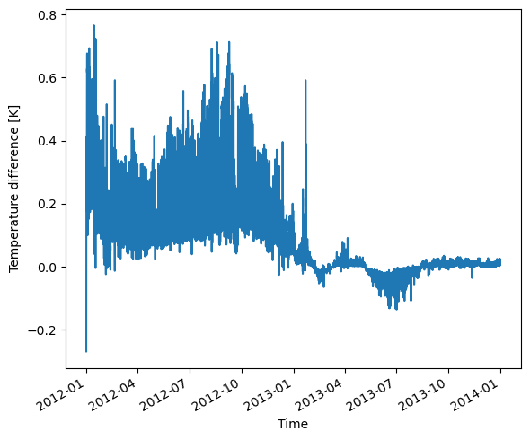

How to spinup in USP mode
[1]:
from pyclmuapp import usp_clmu
spinup case
Run 10 year for spinup
The default SET RUN_TYPE="coldstart", the parameters will set to be in a cold state.
[2]:
usp = usp_clmu()
usp.check_domain()
usp.check_forcing(usr_forcing="inputfolder/Urban-PLUMBER/datm_files/UK-Kin/CLM1PT_data/forcing.nc")
usp_spinup = usp.run(
case_name = "usp_spinup",
RUN_STARTDATE = "2002-01-01",
STOP_OPTION = "nyears",
STOP_N = "10",
RUN_TYPE= "coldstart",
)
usp_spinup
Folder 'inputfolder' already exists.
Folder 'outputfolder' already exists.
Folder 'logfolder' already exists.
Folder 'scriptsfolder' already exists.
Folder '/Users/user/Documents/GitHub/pyclmuapp/inputfolder/usp' created successfully!
Copying the file forcing.nc to the /Users/user/Documents/GitHub/pyclmuapp/inputfolder/usp
[2]:
['/Users/user/Documents/GitHub/pyclmuapp/outputfolder/lnd/hist/usp_spinup_clm0_2024-07-30_14-45-42_clm.nc']
[3]:
usp.nc_view()
[3]:
<xarray.Dataset>
Dimensions: (levgrnd: 25, levlak: 10, levdcmp: 1, time: 175297,
hist_interval: 2, lndgrid: 1, column: 6, gridcell: 1,
landunit: 2, pft: 6, levsoi: 20)
Coordinates:
* levgrnd (levgrnd) float32 0.01 0.04 0.09 ... 19.48 28.87 42.0
* levlak (levlak) float32 0.05 0.6 2.1 4.6 ... 25.6 34.33 44.78
* levdcmp (levdcmp) float32 1.0
* time (time) datetime64[ns] 2002-01-01 ... 2012-01-01
Dimensions without coordinates: hist_interval, lndgrid, column, gridcell,
landunit, pft, levsoi
Data variables: (12/126)
mcdate (time) int32 ...
mcsec (time) int32 ...
mdcur (time) int32 ...
mscur (time) int32 ...
nstep (time) int32 ...
time_bounds (time, hist_interval) datetime64[ns] ...
... ...
URBAN_AC (time, gridcell) float32 ...
URBAN_HEAT (time, gridcell) float32 ...
WASTEHEAT (time, gridcell) float32 ...
WBT (time, gridcell) float32 ...
Wind (time, gridcell) float32 ...
ZWT (time, gridcell) float32 ...
Attributes: (12/38)
title: CLM History file information
comment: NOTE: None of the variables ar...
Conventions: CF-1.0
history: created on 07/30/24 13:41:09
source: Community Land Model CLM4.0
hostname: clmu-app
... ...
ctype_urban_shadewall: 73
ctype_urban_impervious_road: 74
ctype_urban_pervious_road: 75
cft_c3_crop: 1
cft_c3_irrigated: 2
time_period_freq: minute_30startup
[4]:
usp = usp_clmu()
usp.check_domain()
usp.check_forcing(usr_forcing="inputfolder/Urban-PLUMBER/datm_files/UK-Kin/CLM1PT_data/forcing.nc")
usp_london_start = usp.run(
case_name = "usp_start",
RUN_STARTDATE = "2012-01-01",
STOP_OPTION = "nyears",
STOP_N = "2",
RUN_TYPE= "branch",
RUN_REFCASE= "usp_spinup",
RUN_REFDATE= "2012-01-01",
)
usp_london_start
Folder 'inputfolder' already exists.
Folder 'outputfolder' already exists.
Folder 'logfolder' already exists.
Folder 'scriptsfolder' already exists.
Folder '/Users/user/Documents/GitHub/pyclmuapp/inputfolder/usp' already exists.
Copying the file forcing.nc to the /Users/user/Documents/GitHub/pyclmuapp/inputfolder/usp
[4]:
['/Users/user/Documents/GitHub/pyclmuapp/outputfolder/lnd/hist/usp_start_clm0_2024-07-30_14-47-28_clm.nc']
no spinup
[5]:
usp = usp_clmu()
usp.check_domain()
usp.check_forcing(usr_forcing="inputfolder/Urban-PLUMBER/datm_files/UK-Kin/CLM1PT_data/forcing.nc")
usp_london_start_no = usp.run(
case_name = "usp_start_no",
RUN_STARTDATE = "2012-01-01",
STOP_OPTION = "nyears",
STOP_N = "2",
RUN_TYPE= "coldstart",
RUN_REFCASE= "usp_spinup",
RUN_REFDATE= "2012-01-01",
)
usp_london_start_no
Folder 'inputfolder' already exists.
Folder 'outputfolder' already exists.
Folder 'logfolder' already exists.
Folder 'scriptsfolder' already exists.
Folder '/Users/user/Documents/GitHub/pyclmuapp/inputfolder/usp' already exists.
Copying the file forcing.nc to the /Users/user/Documents/GitHub/pyclmuapp/inputfolder/usp
[5]:
['/Users/user/Documents/GitHub/pyclmuapp/outputfolder/lnd/hist/usp_start_no_clm0_2024-07-30_14-49-11_clm.nc']
[6]:
import matplotlib.pyplot as plt
fig = plt.figure(figsize=(6, 5))
ax = fig.add_subplot(111)
usp_london_start_no_nc=usp.nc_view(usp_london_start[0])
usp_london_start_nc=usp.nc_view(usp_london_start_no[0])
#usp_london_start_no_nc['TSA_U'].plot()
#usp_london_start_nc['TSA_U'].plot()
diff = usp_london_start_no_nc['TSA']-usp_london_start_nc['TSA']
diff.plot(ax=ax)
ax.set_ylabel('Temperature difference [K]')
ax.set_xlabel('Time')
plt.tight_layout()
plt.savefig('figs/usp_london_spinuptest.pdf', dpi=300)
plt.show()
print(usp_london_start_no_nc['TSA'].mean())
print(usp_london_start_nc['TSA'].mean())

<xarray.DataArray 'TSA' ()>
array(285.07147, dtype=float32)
<xarray.DataArray 'TSA' ()>
array(284.97766, dtype=float32)